| |
TPR's Scandinavia Trip
Copenhagen Sommerland Sjaelland Bakken Tivoli Gardens Bon Bon Land
Hansa Park Legoland Billund Djurs Sommerland
Tivoli Friheden
Farup Sommerland
Tusenfryd
Liseberg
Skara Sommerland Grona Lund Power Park Sarkanemmi Linnemaki
Time for yet another park, and this was by far the most brutal morning of the trip, with us leaving at 5:00 am. We had to have our breakfast bagged cause it was too early for it to start, which didn't really matter since I was completely out the entire bus ride up.
 Hooray!! We have made it to Norway's only major theme park. =)
Hooray!! We have made it to Norway's only major theme park. =)
Don't question Patrick's choice to run up the down escelator. He'll just continue to do that for the rest of the trip.
 All right. Enough small chat. Let's get the ERT started. =)
All right. Enough small chat. Let's get the ERT started. =)
 Speed Monster is the park's Intamin Rocket Coaster and one of the ones I've been really interested in ever since I first saw it, so this was a happy moment for me.
Speed Monster is the park's Intamin Rocket Coaster and one of the ones I've been really interested in ever since I first saw it, so this was a happy moment for me.
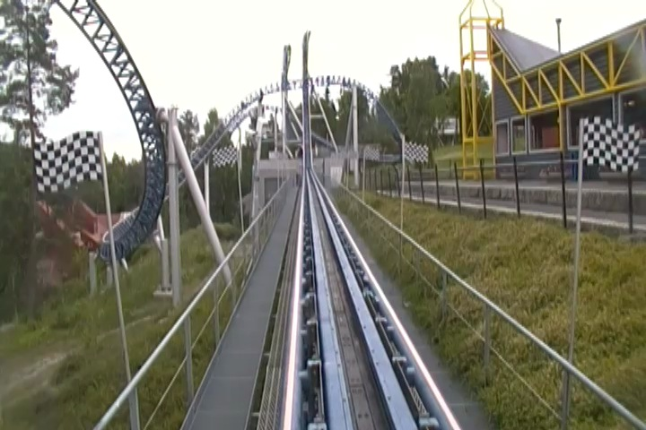
Sadly, Speed Monster wasn't as good as I hoped. Don't get me wrong. I liked it, it was really fun and all, but it was more cruisy and floaty and less "HOLY SH*T!!!" intense.
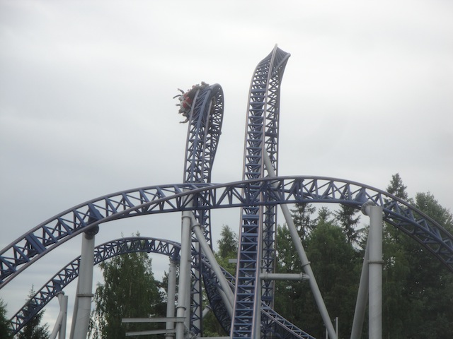
Speed Monster is home to one of only two Norweigian Loops in the world (other one is on Farenheight. God, I'm overdue for another visit to Hersheypark). They're fun, but not the best inversion out there.
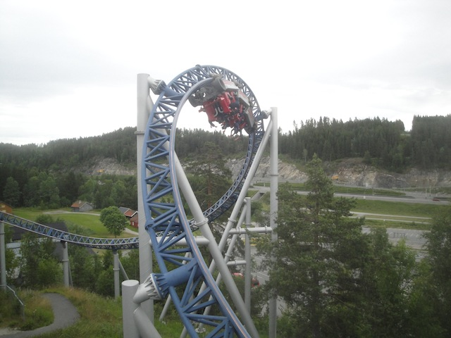
Oh, did I mention that Tusenfryd has one of the best park settings ever? Yeah, check it out. Simply beautiful. With this and all the other great park settings, I'm so updating my Top 10 Theme Park Settings.
They also offered us a bonus ERT session on their water coaster, Super Splash. I wasn't in the mood to ride this in this kind of weather and it doesn't count as a credit, but I didn't want to be the asshole refusing ERT. So I rode anyway.
 "GET OUT OF THE SOAK ZONE KEVIN!!! YOU AND YOUR CAMERA ARE ABOUT TO GET SOAKED!!!" (Actual quote from somone as I took this photo).
"GET OUT OF THE SOAK ZONE KEVIN!!! YOU AND YOUR CAMERA ARE ABOUT TO GET SOAKED!!!" (Actual quote from somone as I took this photo).
"Why are we drying the seats off? They're just gonna get wet."
The mandatory western area law also applies to Norway.
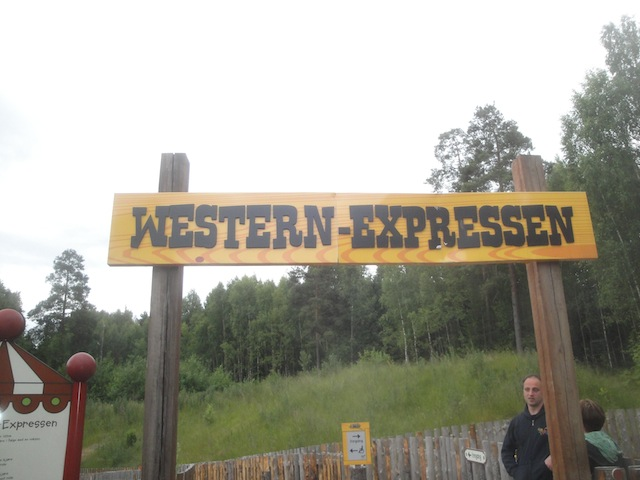
Next up, we move onto Western Expressen. The park's Vekoma Roller Skater.
This ride actually came from Mirabilandia. Thought it could escape me by fleeing to Norway. WRONG!!! =)
A Roller Skater a day keeps the doctor away.
I love these large roller skaters. They need to pop up in more parks.
 Rick: "Yawn, can we get to Teeny Weeny now?"
Rick: "Yawn, can we get to Teeny Weeny now?"
The flat ride collection here is rather...dull. Sorry, but not much here stands out. A space shot = average.
 Now for the other star attraction of Tusenfryd, Thunder Coaster. The park's Vekoma Woody.
Now for the other star attraction of Tusenfryd, Thunder Coaster. The park's Vekoma Woody.
 Vekoma Woody? Uh oh. Better bring out the asprin.
Vekoma Woody? Uh oh. Better bring out the asprin.
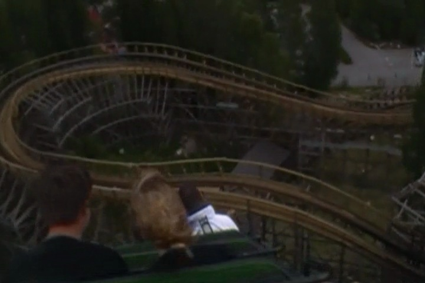
It was actually really good. Not butter smooth, but tolerable. And of course, it had a great layout with lots of airtime and laterals.
"Ugh. I'm too old for this sh*t."
 And now for Rick's favorite part of the trip. Teeny Weeny. The world's smallest coaster.
And now for Rick's favorite part of the trip. Teeny Weeny. The world's smallest coaster.
 Getting the credit was good and all, but the best part was easily the death stare we got from one Norwegian parent.
Getting the credit was good and all, but the best part was easily the death stare we got from one Norwegian parent.
 Sad and pathetic!!! All of you!!!
Sad and pathetic!!! All of you!!!
 Just one more credit left for us to get at the park, Loopen.
Just one more credit left for us to get at the park, Loopen.
 Loopen is the park's Vekoma Loopscrew for those who couldn't tell.
Loopen is the park's Vekoma Loopscrew for those who couldn't tell.
Holy Crap!! Longest line of the trip!! That thing took us 45 minutes. Not an acceptable wait for a ride of this quality.
 Now I'm not normally an advocate for demolishing roller coasters, but this ride needs to go. It's a mediocre loopscrew, but that's not why. It has extremely low capacity. All the restraints have to be undone manually, and considering how operations here are...Six Flagsish...that's REALLY REALLY BAD!!! Because of the outdated technology, it can only run one train and if the train overshoots (it happened to us twice while waiting), it has to go around again. With the aforementioned bad operations, this is especially frustrating for guests waiting in this line, and not even that good for those on the ride since...it sucks. I can't imagine this ride being easy to maintain considering just how fragile it is and how many essential roller coaster functions it lacks. I rest my case.
Now I'm not normally an advocate for demolishing roller coasters, but this ride needs to go. It's a mediocre loopscrew, but that's not why. It has extremely low capacity. All the restraints have to be undone manually, and considering how operations here are...Six Flagsish...that's REALLY REALLY BAD!!! Because of the outdated technology, it can only run one train and if the train overshoots (it happened to us twice while waiting), it has to go around again. With the aforementioned bad operations, this is especially frustrating for guests waiting in this line, and not even that good for those on the ride since...it sucks. I can't imagine this ride being easy to maintain considering just how fragile it is and how many essential roller coaster functions it lacks. I rest my case.
 "Mr. President, tear down this ride!!"
"Mr. President, tear down this ride!!"
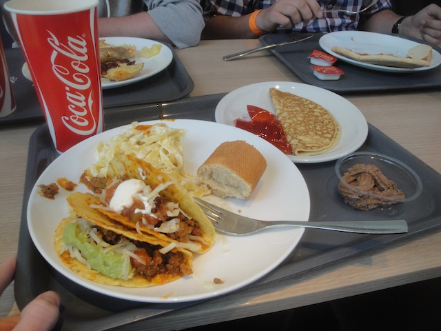
And as always, we were served a good lunch. Thank you Tusenfryd for the tacos.
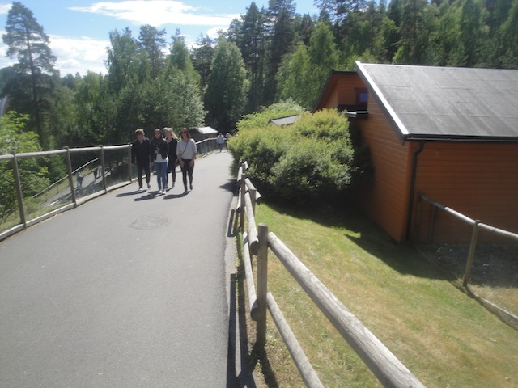
Quick note, Tusenfryd is a very hilly park. Now this isn't a problem for me as I run 8 miles at Arroyo Verde, which is super hilly, and completed a Tough Mudder, so I was fine. Everyone else was tired though.
Is this a fun dark ride? Yes. Is this up to par with Spiderman? NO!!!!
After seeing an episode of New Spongebob, this just makes me want to cry.
Pass through the troll and enter into the obstacle course without a single obstacle.
 Remember the comment I made earlier about Tusenfryd lacking a stand out flat ride? I take that back. This Giant Frisbee is awesome. Between this and Bon Bon Land, Zamperla can fill the void of Giant Frisbees left behind by Huss.
Remember the comment I made earlier about Tusenfryd lacking a stand out flat ride? I take that back. This Giant Frisbee is awesome. Between this and Bon Bon Land, Zamperla can fill the void of Giant Frisbees left behind by Huss.
Yeah. Tusenfryd was crowded and that was a problem. Unlike the clientelle of nearly all the other Scandinavian parks, the people here were on the rude side and kind of...Six Flagsish, a place for parents to dump off their teens so they don't bug them in Oslo. And you know how I've kept saying Six Flagsish, I don't wanna go quite that far. This place is Europa Park when compared to someplace like Six Flags Over Texas. It's a fun park and all, but it's definetly one of my least favorite European Parks, not living up to the amazingness of the other parks on this trip or the Mega Europe trip back in 2012.
 Nightmare is a...shooting...horror...just ride it. It's really fun.
Nightmare is a...shooting...horror...just ride it. It's really fun.
"I'm still determined to eat a waffle on every single park on this trip."
Ooh. I wonder what all this wood is for. =)
"Shooting people is bad. M'kay."
Ooh!! They have Urge here (reminent of Surge. Best soda ever). Sadly, I was not able to get any since I didn't bring any Norwegian Kroners (Norway is REALLY expensive and I was only here for one day). I was fine, I just wish I had planned ahead and budgeted enough for a single Urge. Oh well, I can just order some online.
 Night ERT has now begun, and we start out with Thunder Coaster.
Night ERT has now begun, and we start out with Thunder Coaster.
 I don't get the people who complained about the roughness. This ride is awesome.
I don't get the people who complained about the roughness. This ride is awesome.
 You can clearly see where they retracked the ride.
You can clearly see where they retracked the ride.
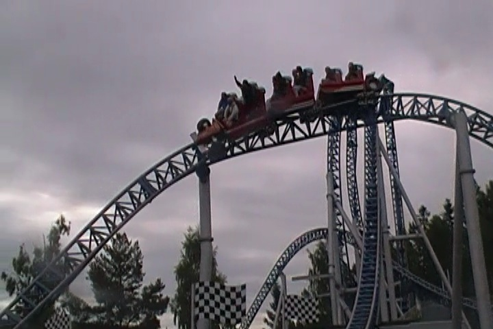
And of course, we also have more Night ERT on Speed Monster.
 Gentlemen, Start your engines!!
Gentlemen, Start your engines!!
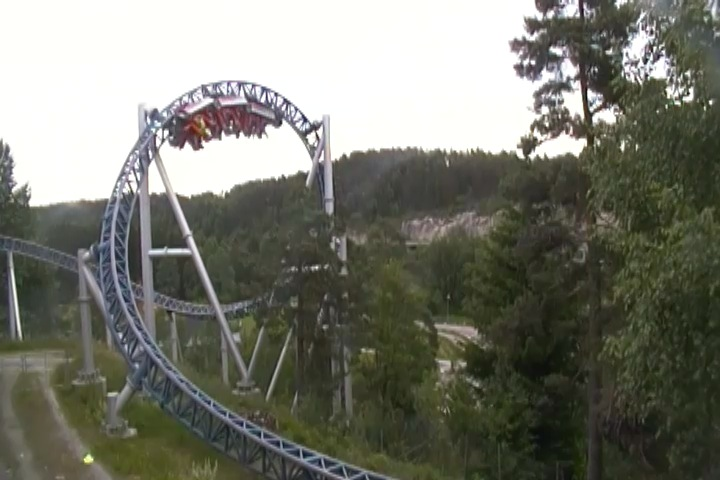
It may be a cruiser, but don't underestimate the whip moments this ride has. =)
And now we begin our drive back to Goteborg, which was insanely beautiful. Norway is esentially the Colorado of Europe.
But the beauty was just the tip of the ice berg as this bus ride had perhaps some of the best conversations ever. It was simply awesome.
Ross fondles TP Dave's nipples.
Norway knows that we're here.
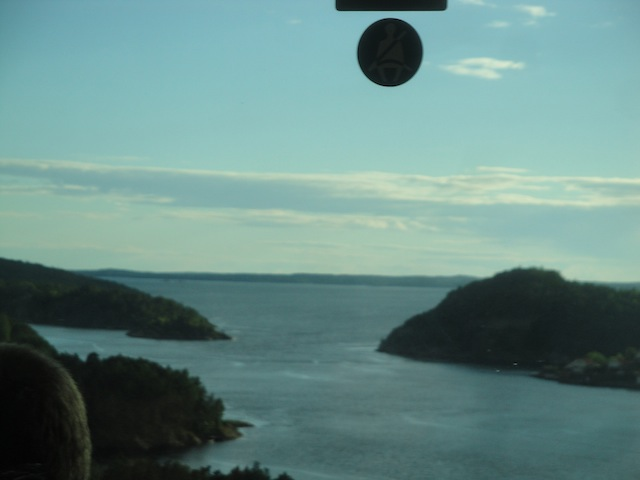
I just LOVE all the fjords in Scandinavia.
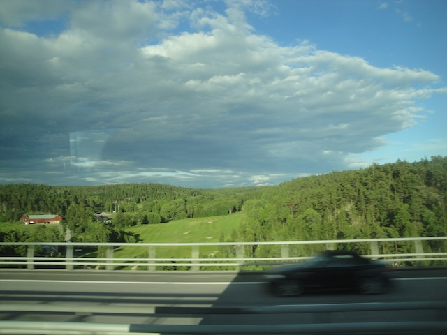
I love the way all the beauty outside the bus clashes with all the filth being spoken about inside the bus.
We get back to Gothenburg, and just head over to a local McDonalds for dinner. There, a local bumped into us and noticed that we were out of town. Everyone else speaks of where they're from. "United Kingdom." "Australia." He then turns to me and says,"You're probably a Swede". He was stunned when I told him that I was from the United States. He told me that I didn't look or sound like an American, and that I sounded like I was from another country (Why do people keep telling me that I have an accent?). God I love fitting in around here. This is just another sign that I belong in this part of the world.
Liseberg
Home
|